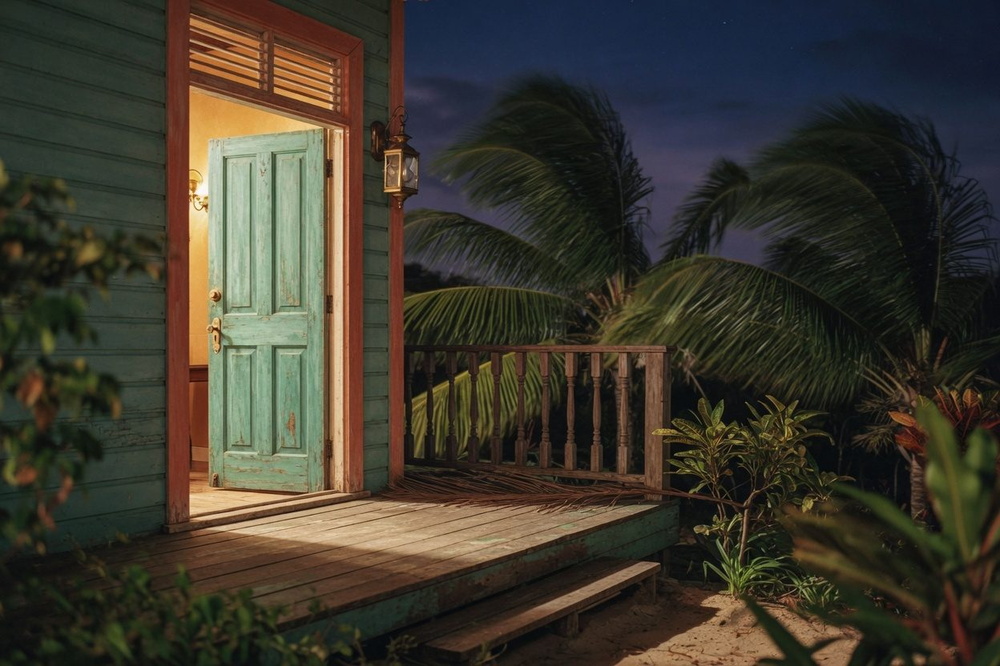
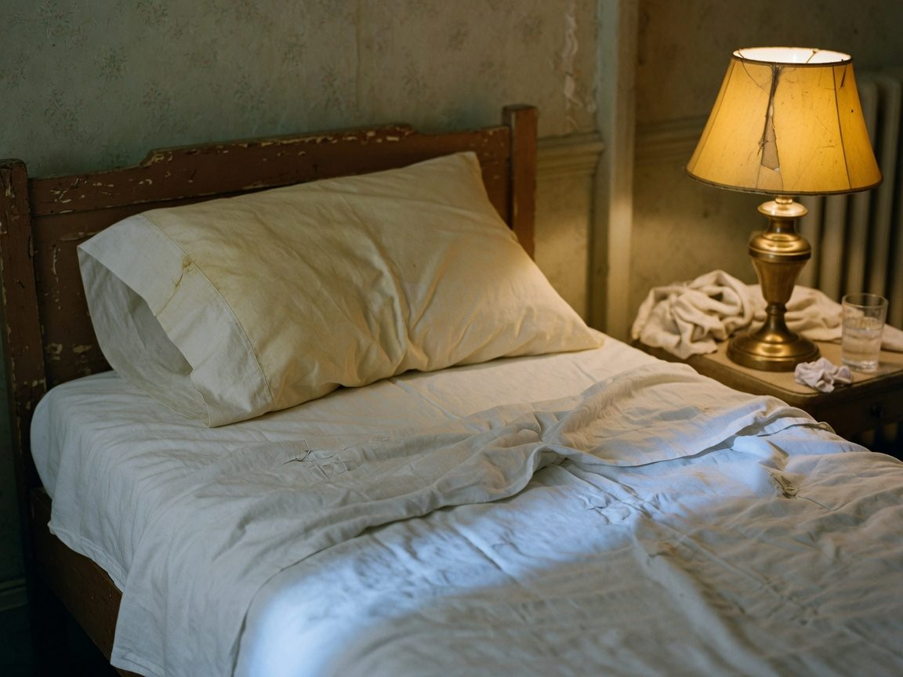
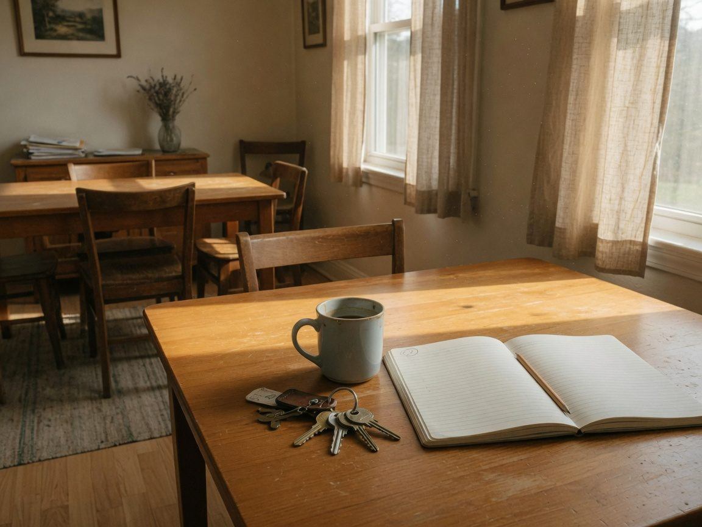

No future inside the wish
Spanish can hide the verb: estoy en Barbados / ya estás. English names it. You are. I am. If you drop am, the sentence dies. If you add will, you confess you are not there.

You already have this book in Spanish.
Tonight you say I AM in English.
Neville wanted to go home. He had no money. Abdullah, on 72nd Street in New York, did not discuss the ticket. He said four words. English has a tense for that: now.
You are in Barbados.
Spanish can hide the verb: estoy en Barbados / ya estás. English names it. You are. I am. If you drop am, the sentence dies. If you add will, you confess you are not there.
I am in Barbados.
I am still in my house because of the rain.
Neville’s whole teaching hangs on two words: I AM. In English they are sacred and grammatical. You cannot glue them to a Spanish adjective. Estoy de acuerdo is not I am agree.
I am agree. I still in my house.
I agree. I am in my house.
I AM is the name. I agree is the verb.
Feeling is the Secret, 1944. Neville is not being poetic. He is doing English grammar. Future tense confesses lack. Present tense assumes the end.
I am healthy is a stronger feeling than I will be healthy. To feel I will be is to confess I am not.
Of Barbados: I will go. From Barbados: I am here. Of the house: I will have it. From the house: I am opening the door. You already wrote that sentence in class. Keep it in the present.
I will have my own house.
I am opening the door of my new house.
Not excitement. The feeling of reality — as if it were true. English needs the verb in the right tense, and the gerund when it is a thing you enjoy.

I fall asleep feeling it is already true.
I enjoy dancing bachata.
I am practicing the feeling of my own house.
Abdullah slammed the door when Neville talked about the boat. The means appear. In English, after need / want / agree, the infinitive still wants to. The how is silent. The to is not.
A family cable. A passage. Neville wavered: third class to St. Thomas. Abdullah would not. You went first class. On 6 December the Nerissa sailed. There had been a cancellation. He went first class. Faithful to the assumption. Not to the compromise.
I need get a ticket. I want go first class.
I need to get a ticket. I want to go first class.
I agreed to check. I need to get the file.
You told Gabriel you were practicing the feeling of your own house. Emerson was already in our class: every spirit builds for itself a house. Tap a name. Hear it. Then you can talk.

Man surrounds himself with the true image of himself, as every spirit builds for itself a house beyond its world.
I am in my house. I am practicing the feeling of it.
Nobody at work wants the whole lecture. They want three sentences and your voice. You already learn from people whose English is clear. Be one of them.
I love Neville Goddard. He taught that imagination is God, and that I AM is the name. You live in the end: I am, not I will be. Feeling is the secret.
Four sentences in English. You are from Venezuela. You are an accountant. You dance bachata. You already practiced the feeling of a house.
1. What is your Barbados — in one present-tense sentence?
2. I AM or I agree — which one, and why?
3. I am or I will be — which one for the wish fulfilled?
4. A sentence with to get that you used to drop.
Saved on this phone. Read it out loud to Gabriel.
You are in Barbados. I am. Say it. Then say it again, slower.
ARCHES · Carlenis · I AM · 2026-09-09